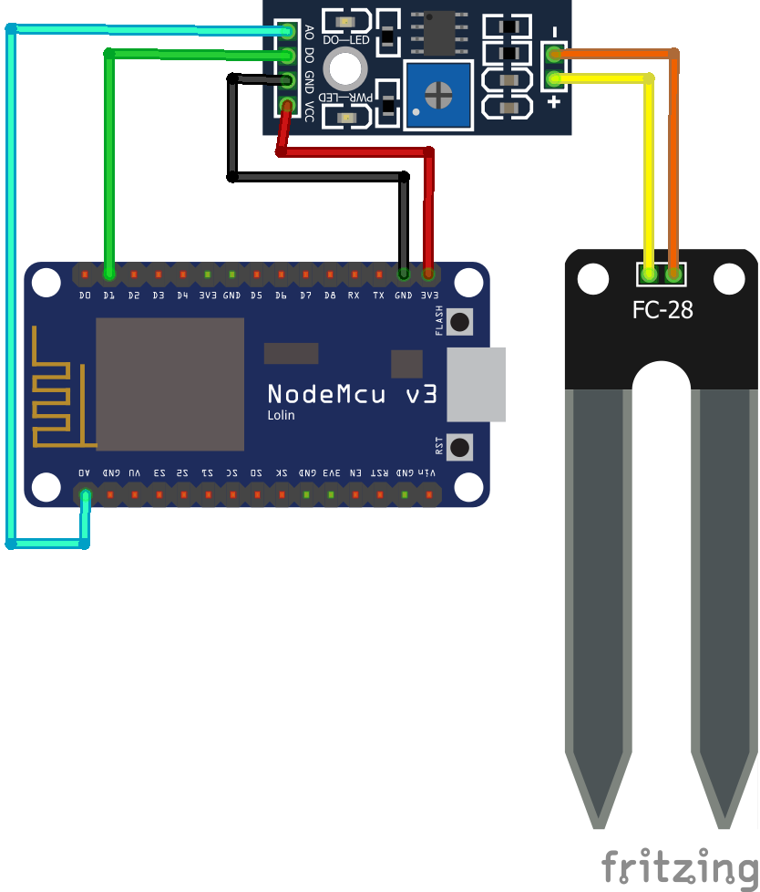

Welcome
to the first make session!
OK who are you and how are you feeling?
All had the blinking light working?
perfect then this is the link for the tutorial:
https://github.com/svenvs/socialPlant/tree/main/tutorial
Yeaaah Ill guide you through it :D
Lets wire up the soil sensor!
